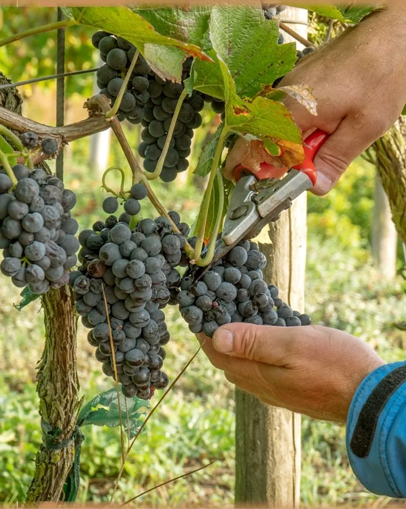
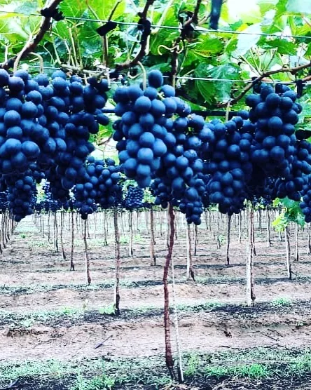
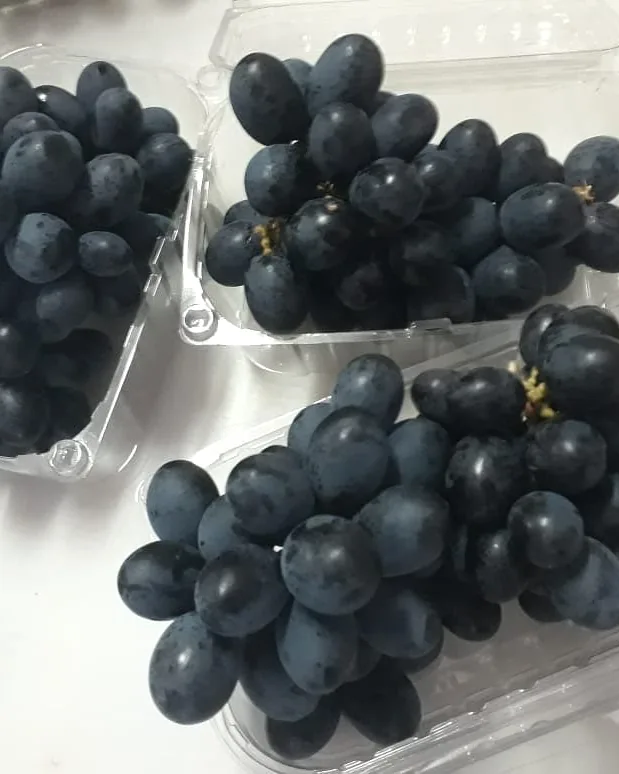

Antocianinas
O azul profundo do mirtilo vem das antocianinas, pigmentos naturais presentes na casca da fruta.
Berries e uvas do Vale do São Francisco
A On-Berry é uma empresa nacional de desenvolvimento agrícola. Cultivamos e comercializamos berries e uvas no polo de fruticultura irrigada do Vale do São Francisco.
A empresa
Somos uma empresa nacional voltada ao desenvolvimento agrícola e à comercialização de berries e uvas produzidas no Vale do São Francisco.
A região é conhecida pelas uvas e mangas que abastecem o Brasil e o exterior. Ali, a On-Berry cultiva também o mirtilo, uma fruta de clima frio, com variedades adaptadas ao calor, irrigação controlada e acompanhamento de perto em cada fase da planta.
Nosso trabalho é unir a técnica do campo à regularidade que o mercado exige: fruta firme, bem selecionada e embalada para chegar fresca a quem compra.


Mirtilo
Fruta firme, de casca escura e sabor equilibrado entre o doce e o ácido, colhida no ponto e selecionada antes de ir para a embalagem.

Sobre a fruta
Aquela camada fosca sobre a casca se chama pruína. É uma cera natural que a própria planta produz para proteger o fruto da perda de água. Quando ela está inteira, a fruta foi pouco manuseada do pé até a embalagem.
O azul profundo do mirtilo vem das antocianinas, pigmentos naturais presentes na casca da fruta.
O mirtilo nasceu em regiões frias. No semiárido, ele é cultivado com variedades que precisam de pouco frio para florescer.
Lave apenas na hora de comer e mantenha na geladeira. Assim a casca e a pruína se conservam por mais tempo.
Uvas
O Vale do São Francisco é o principal polo de uvas de mesa do país. É dessa tradição que vem a nossa linha de uvas, cultivadas em parreiral e colhidas à mão, cacho a cacho.



Cultivo
Cada etapa é acompanhada no campo. É o que garante uma fruta regular, safra após safra.

As mudas vão para vasos com substrato próprio, sobre cobertura de solo, o que permite controlar água e nutrição planta a planta.
Irrigação localizada, poda e acompanhamento técnico preparam a planta para florescer e firmar os frutos.
O mirtilo amadurece aos poucos no mesmo cacho. A colheita é manual e feita em várias passadas, só com as frutas no ponto.
As frutas são selecionadas, embaladas e mantidas refrigeradas até a expedição, preservando firmeza e pruína.
O Vale
Sol quase o ano inteiro, água do Rio São Francisco e clima seco. No semiárido irrigado, o produtor controla o que a natureza não entrega e aproveita o que ela tem de sobra.
3.000h
de sol por ano, em média, na região
2,5
safras de uva por ano no polo irrigado
9°S
de latitude, perto da linha do Equador
A irrigação vem do Rio São Francisco e é aplicada na medida certa para cada fase da planta.
A baixa umidade do ar reduz a pressão de doenças nas folhas e nos frutos.
A região tem estrutura de embalagem, frio e transporte para levar fruta fresca a todo o país e ao exterior.
Contato
Para compras, parcerias comerciais e imprensa, fale direto com a nossa equipe.